進入到選擇英雄的畫面，解鎖英雄及升級英雄星力需要透過開啟宇宙寶箱，獲得英雄碎片。
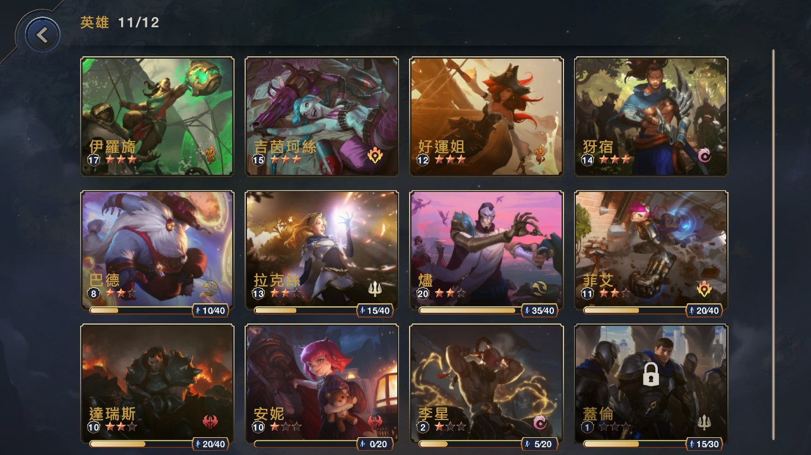
選擇一個英雄後，會先看到總覽，有這位英雄的對戰風格、使用難度以及英雄故事。左上角也有目前的英雄等級與英雄星力，右邊則是目前裝備的聖物。
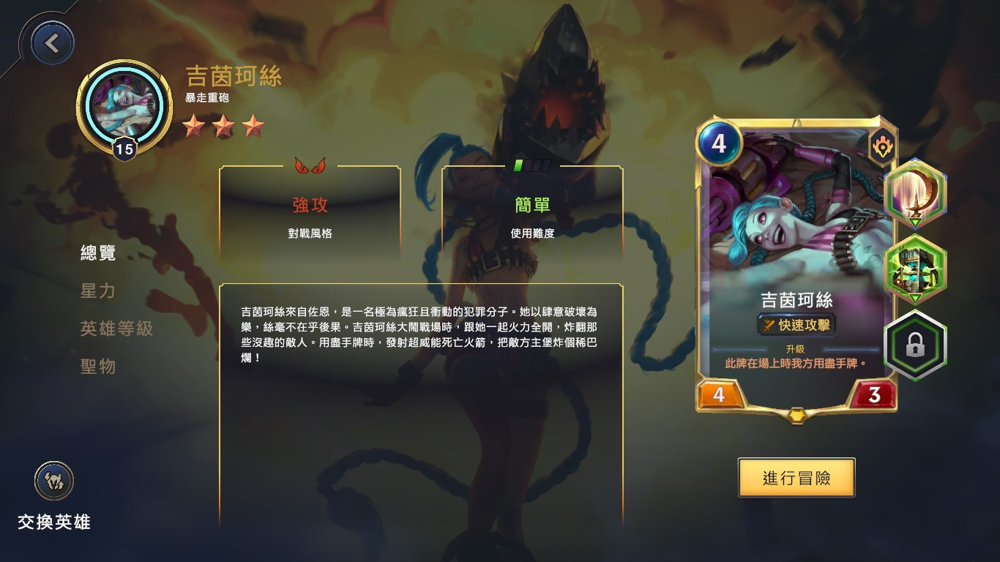
隨著英雄星力的提高，英雄也會獲得更強大的能力，星等三所獲得的能力是星等一的強化，而星等二除了起始魔力+1外，也會得到額外的能力。
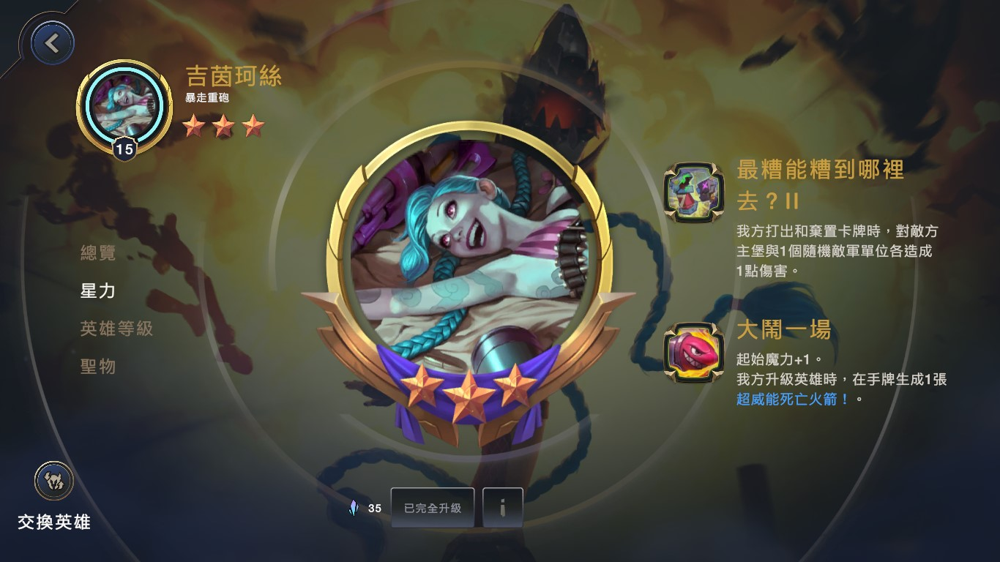
英雄等級的提升，可以讓初始牌組裡的牌，得到更強力的道具，讓關卡中得到稀有能力與道具的機會提升，也使可裝備聖物欄位解鎖。
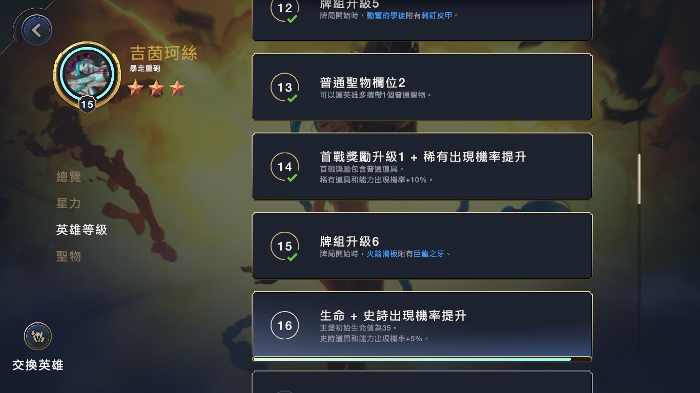
聖物可透過打劇情冒險與完成任務取得，分成稀有與普通聖物，裝備在聖物欄位，英雄就能獲得特殊能力。
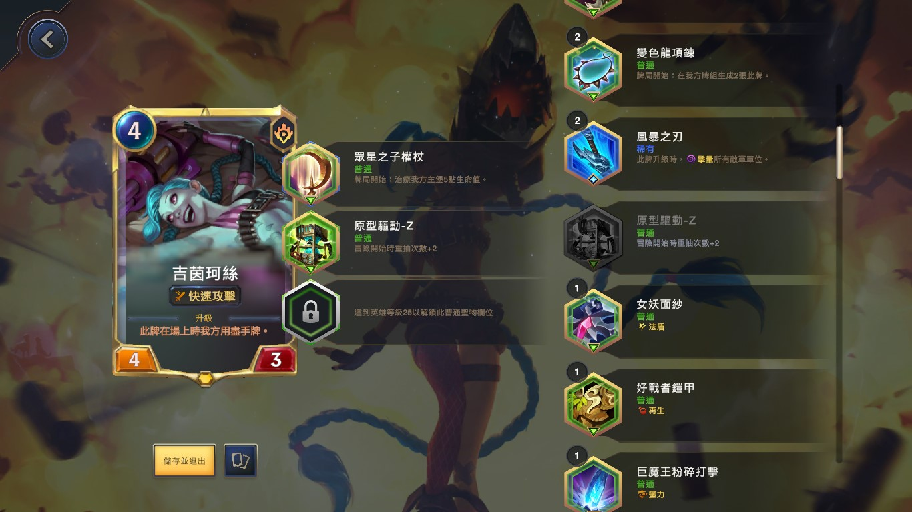
關卡分成英雄戰役與世界冒險，英雄戰役可以看到各個英雄的故事，透過打關卡，可以獲得傳說等級與英雄等級的經驗
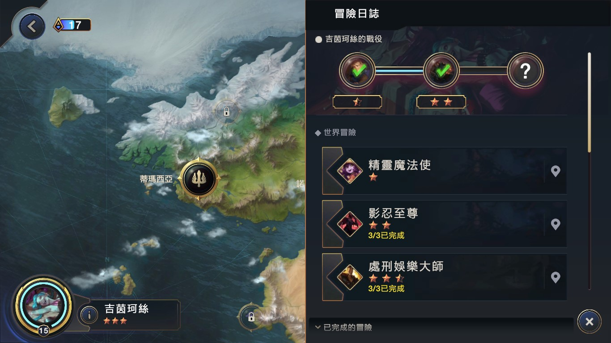
進入關卡後，看到一個地圖。
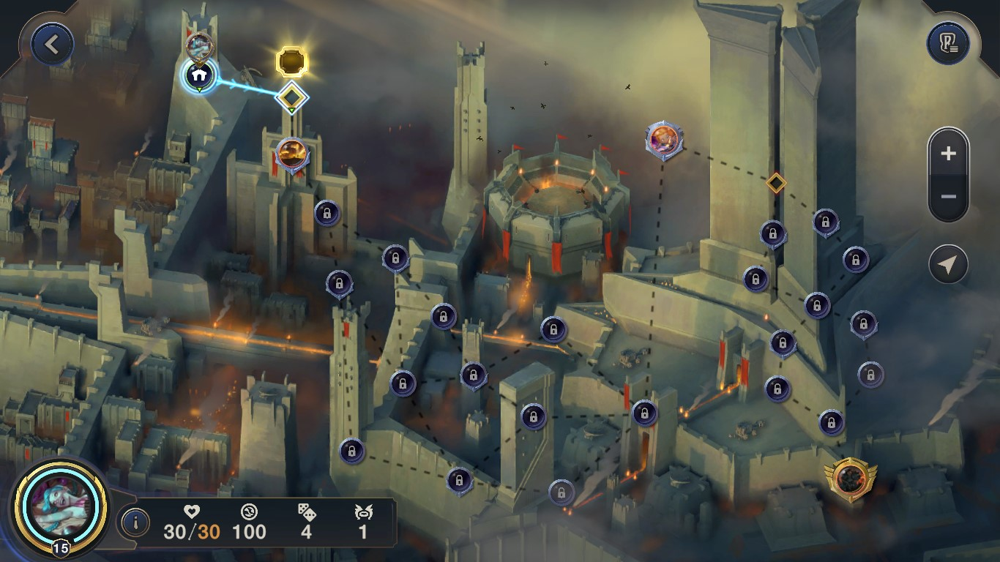
首先選擇一個能力，能力有普通、稀有、史詩、傳說四種稀有度。
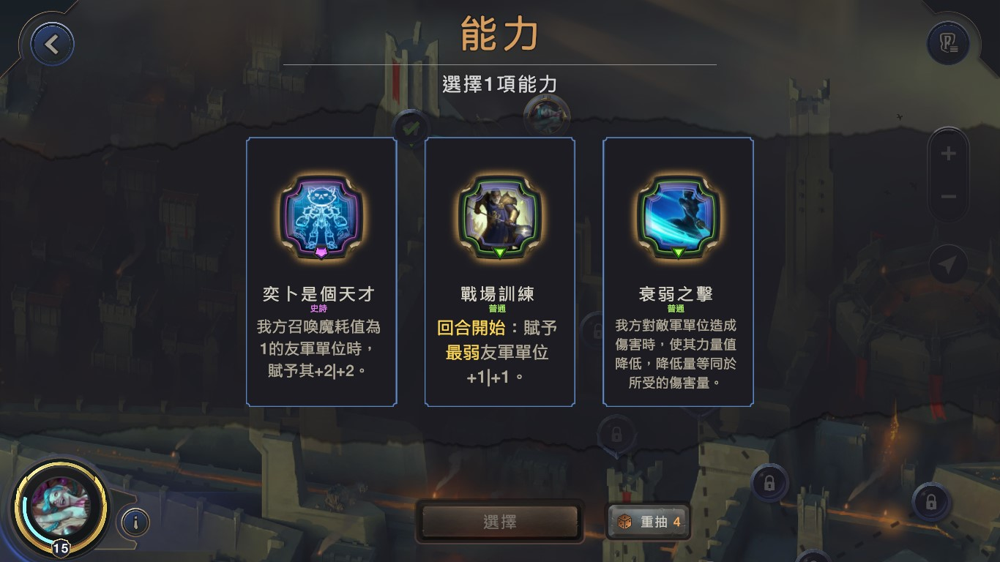
若是英雄戰役，在點選關卡時，會出現對話。
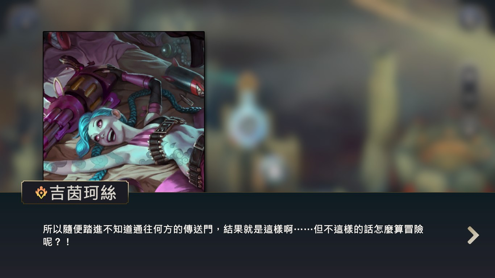
接著跳出關卡資訊。
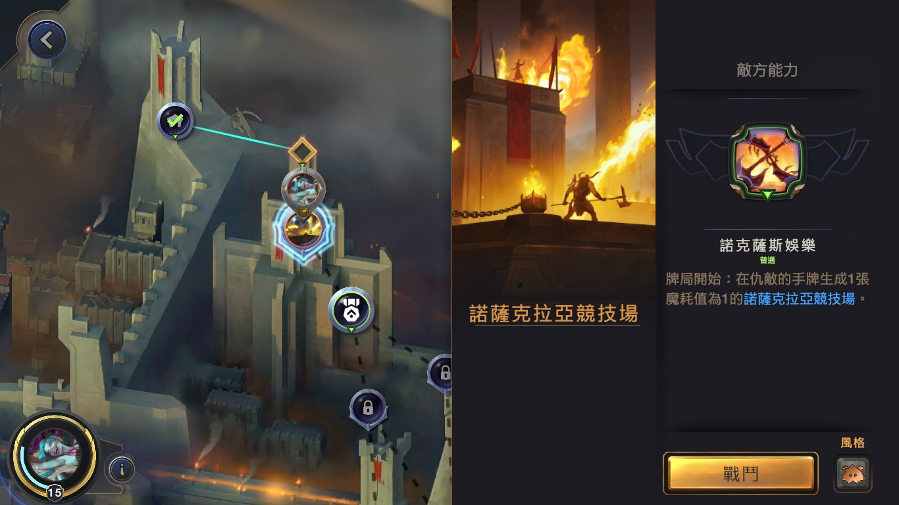
進入關卡後，左側可以看到對手的能力，一開始自己選的能力及依照星力等級給的能力。
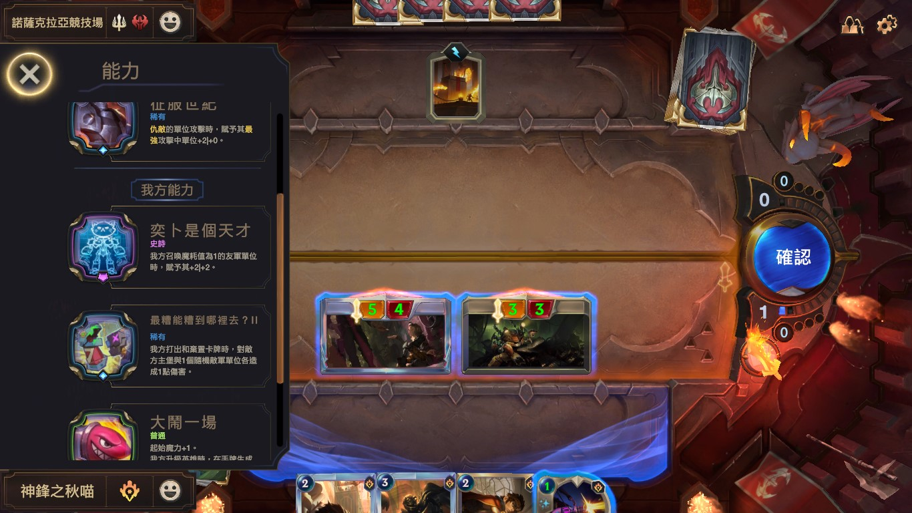
贏了之後可以選擇要加進牌組的卡。
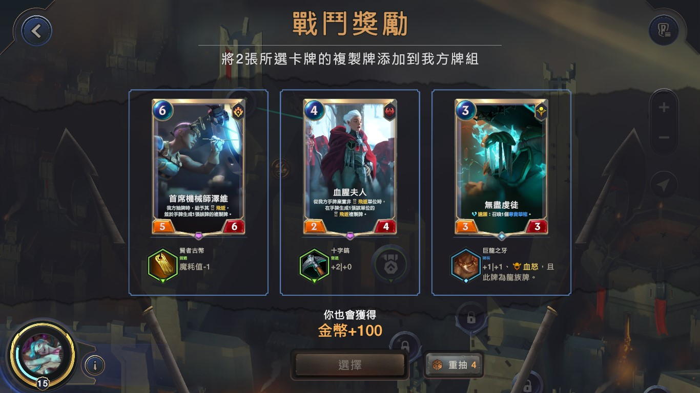
第一關贏了之後，選擇輔助英雄，加入牌組。
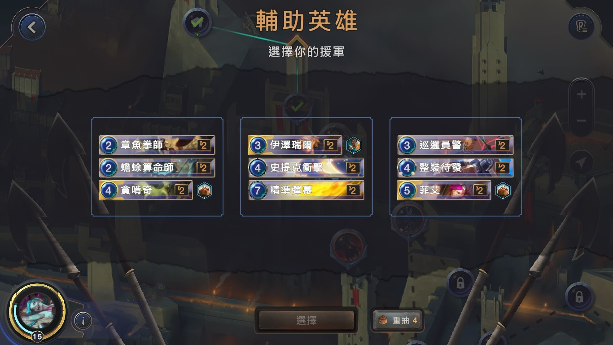